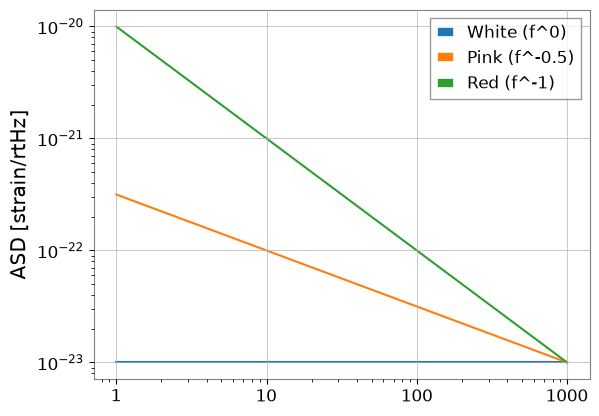
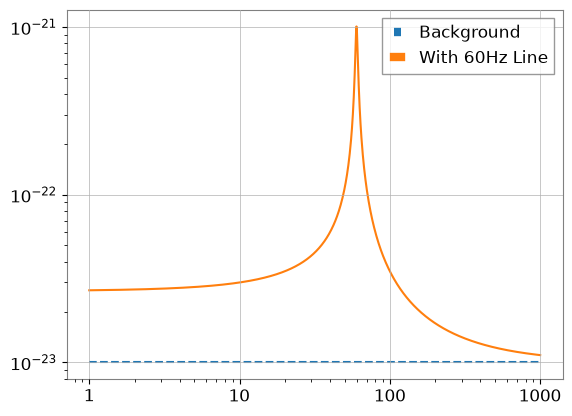
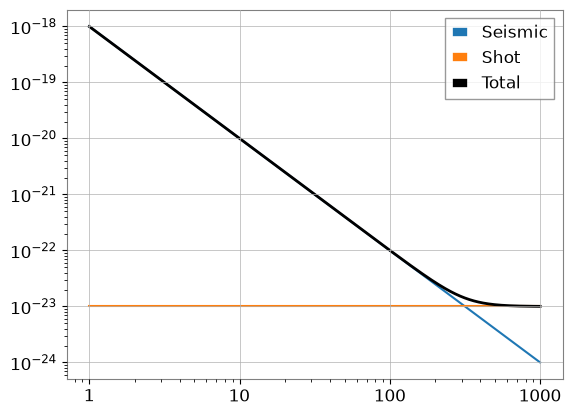

Note
This page was generated from a Jupyter Notebook. Download the notebook (.ipynb)
[1]:
# Skipped in CI: Colab/bootstrap dependency install cell.
Noise Generation: Basics
Goal: Learn how to generate, manipulate, and model noise in gravitational-wave data using GWexpy.
Prerequisites:
pygwinc(optional, for detector models)obspy(optional, for seismic models)
1. Generating ASD (Amplitude Spectral Density)
GWexpy provides several ways to generate ASDs, from theoretical power-laws to detector-specific models.
[2]:
import warnings
warnings.filterwarnings("ignore", category=UserWarning)
warnings.filterwarnings("ignore", category=DeprecationWarning)
import matplotlib.pyplot as plt
import numpy as np
from gwexpy.noise import asd
freqs = np.logspace(0, 3, 1000)
# 1. Power-law ASDs
white = asd.white_noise(amplitude=1e-23, frequencies=freqs)
pink = asd.pink_noise(amplitude=1e-22, f_ref=10, frequencies=freqs)
red = asd.red_noise(amplitude=1e-21, f_ref=10, frequencies=freqs)
plt.loglog(white.xindex, white, label="White (f^0)")
plt.loglog(pink.xindex, pink, label="Pink (f^-0.5)")
plt.loglog(red.xindex, red, label="Red (f^-1)")
plt.ylabel("ASD [strain/rtHz]")
plt.legend()
plt.show()

2. Generating Time-domain Noise
You can generate colored noise directly in the time domain using gwexpy.noise.wave.
[3]:
from gwexpy.noise import wave
duration = 4.0
fs = 2048
# Generate pink noise time series
noise_ts = wave.pink_noise(duration=duration, sample_rate=fs, amplitude=1e-21)
noise_ts.plot()
plt.title("Colored Noise Time Series")
plt.show()

3. Spectral Lines and Masking
Real noise contains narrow resonance peaks (lines). You can add them using Lorentzian or Gaussian shapes.
[4]:
from gwexpy.noise.asd import lorentzian_line
# lorentzian_line requires Q or gamma (HWHM)
line = lorentzian_line(f0=60, gamma=1.0, amplitude=1e-21, frequencies=freqs)
total_asd = white + line
plt.loglog(freqs, white.value, "--", label="Background")
plt.loglog(freqs, total_asd.value, label="With 60Hz Line")
plt.legend()
plt.show()

4. Non-Gaussian Noise (Glitches)
gwexpy.noise.non_gaussian provides models for non-stationary noise like scattered light or transient bursts.
[5]:
from gwexpy.noise.non_gaussian import scatter_light_noise, transient_gaussian_noise
# 1. Transient burst (Model I)
burst = transient_gaussian_noise(duration=1.0, sample_rate=fs, A1=10.0)
# 2. Scattered light (Model II)
scatter = scatter_light_noise(duration=10.0, sample_rate=fs, A2=1e-6, G=1e-21)
fig, ax = plt.subplots(2, 1, figsize=(10, 8))
ax[0].plot(burst.times, burst); ax[0].set_title("Transient Gaussian Burst")
ax[1].plot(scatter.times, scatter); ax[1].set_title("Scattered Light Noise")
plt.tight_layout()
plt.show()

5. Case Study: Simple Noise Budget
Combine multiple noise sources (seismic, thermal, shot noise) to create a total noise budget.
[6]:
# seismic ~ f^-2
seismic = asd.power_law(exponent=2, amplitude=1e-20, f_ref=10, frequencies=freqs)
# shot ~ f^0
shot = asd.white_noise(amplitude=1e-23, frequencies=freqs)
total = np.sqrt(seismic.value**2 + shot.value**2)
plt.loglog(freqs, seismic.value, label="Seismic")
plt.loglog(freqs, shot.value, label="Shot")
plt.loglog(freqs, total, "k", lw=2, label="Total")
plt.legend()
plt.show()

Common Mistakes and Failure Modes
Assuming the ASD slope alone validates the time-domain realization: a generated noise series can match the target trend on average while still differing in finite-length variance, line structure, or transient content.
Reading synthetic components as independent just because they were generated separately: when you combine seismic, thermal, and shot-noise-like terms, the total curve is a modeling construction, not evidence that real detector subsystems are separable that way.
Confusing line amplitude with line width or quality factor: for narrow spectral features, changing
Qorgammaaffects interpretation differently from changing overall amplitude.Over-interpreting glitches as realistic populations: the non-Gaussian examples illustrate shapes and workflow behavior, not a calibrated model of real glitch rates or detector environments.
Comparing curves without checking units and reference frequencies: a visually reasonable power law can still be mis-parameterized if
amplitude,exponent, orf_refare interpreted inconsistently.Treating a simple noise budget as a validated instrument budget: the case study shows how to combine terms numerically, but it is not a substitute for validated coupling measurements or full uncertainty accounting.
6. Exercises
Spectrum-to-Time: Use
wave.coloredto generate a 10-second signal with an exponent of 1.5, then plot its ASD to verify the slope.Line Removal: (Challenge) Remove the 60Hz line generated in Section 3.
7. Quick Check Cell (NBMAKE)
Used for automated CI validation.
[7]:
assert len(white) == 1000
assert noise_ts.sample_rate.value == 2048
print("Validation successful!")
Validation successful!